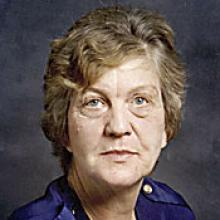

Anna Margaret
Born:
Date of Passing: Feb 22, 2011
Peacefully on February 22, 2011 at the Health Sciences Centre, Anna Margaret Tomasson (Munro) passed away at the age of 79 years.
She was predeceased by parents, Helgi and Hlif Thompson, brothers Clifford and Stanley (Vera), sister Eleanor, son David and daughter Jennifer.
Left to cherish her memory is her daughter Jamisene Jamie (David), son Myles (Dennette), daughter-in-law Mary, grand-children, Matthew (Darcie), Melanie (Josh), Dan, Shawna, Montana, Kellie, and great-grandchildren, Rylan, Isabelle, and Taylor.
She is also survived by her sisters, Eileen Nesbitt, Betty (Lou) Berthelet, May (Roger) Ryplanski, Linda Hoffstrom, Sylvia (Clint) Smith; brothers, Harold, Allan (Louise) and Robert Thompson; and many nephews and nieces.
She was born in Big Point, Manitoba and moved with the family to Langruth, Manitoba. She attended the University of Manitoba in 1950. She later returned to university in her retirement years concentrating on Icelandic Studies and Economics. Twice her Icelandic Studies led her to revisit her roots in Iceland where she re-connected with family. Her strong work ethic led to a career consisting of a variety of accounting related jobs, retiring at the Winnipeg Tax Centre. During that time, she lived in a variety of communities where she raised her four children. She ensured her family attended the local Lutheran church and in her later years she has been a member of the First Lutheran Church in Winnipeg.
In her retirement, she enjoyed playing bridge and lawn bowling while a resident of the Betelstadur Seniors Community. All family was important to her and led her to keep in touch with her siblings and their families. She was a bold, intelligent, beautiful and independent Mother, Amma, and Long Amma who wanted her family to succeed in all they do.
Funeral service will be held at 1:00 p.m. on Tuesday, March 1, 2011 at the First Lutheran Church, 580 Victor Street with the Pastor Michael Kurtz officiating. For those who wish to sign the online Guest Book please visit our website. Chapel Lawn www.chapellawn.mb.ca 885-9715
source